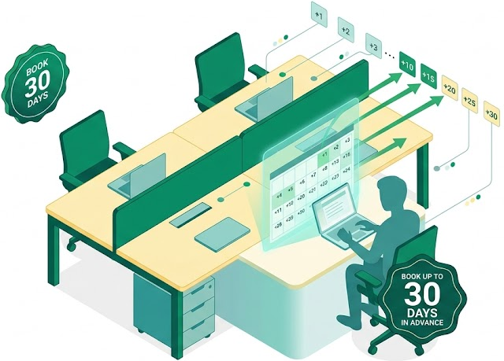

Getting Started
Allow Booking in Advance
Choose whether users can book a desk ahead of time, and if so, how many days out.
Configure

Advance booking limit
How many days ahead of time can a user book a desk? The default is 8 days, up to a maximum of 30. Set this to 0 to turn advance booking off — desks can then only be booked for immediate, same-day use.
days in advance (0 = off, max 30)
Advance booking is on — users can book up to 8 days ahead.